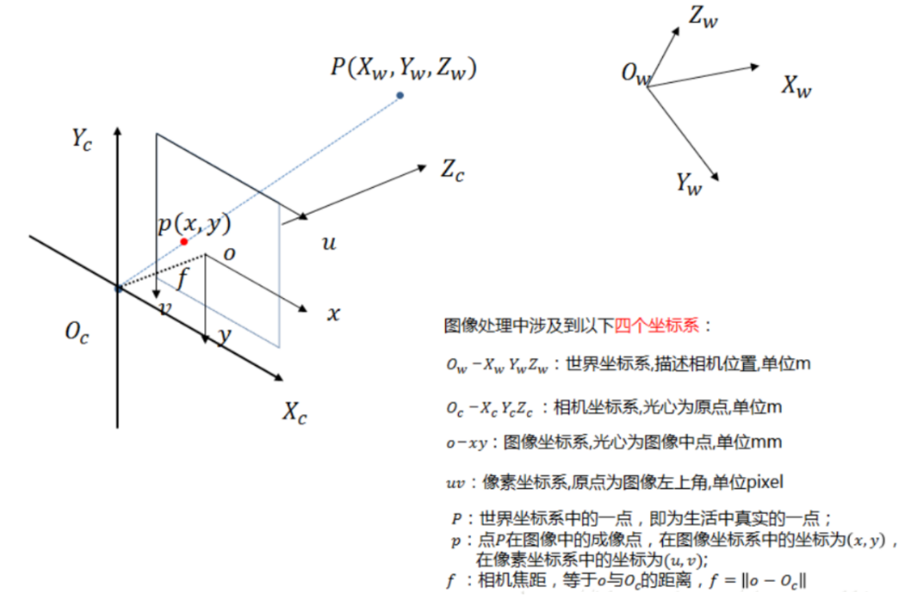

相机标定之四个坐标系
一、四大坐标系简述
 - 世界坐标系：就是身处的世界 - 相机坐标系：相机光心（感光芯片的中心）为坐标原点 - 成像坐标系：焦点为坐标原点，与相机坐标系距离一个焦距，单位是毫米 - 像素坐标系：以图像左上角为坐标原点，单位是像素

1 | 物体（世界坐标系） 透镜（相机坐标系） 成像平面（成像/像素坐标系） |
二、四大坐标系转换
主要思路：要将像素坐标系下的某个二维点，先转换到成像坐标系，再转换到相机坐标系，最后成世界坐标系下的一个三维点。
相机标定的目的：是为了知道二维图像上的一个点或者物体相对于拍摄主体的位置
1. 像素坐标系到成像坐标系的转换
两坐标系的位置关系如下图所示，像素坐标系为\(O_p-(u,v)\) ，成像坐标系为\(O_i-(x,y)\)，转换基于以下两条实现：
成像坐标系的坐标原点为焦点，在像素坐标系下的坐标为\((u_0,v_0)\)
已知\(dx,dy\)分别表示一个像素物理x方向和y方向的长度

转换关系为：

2.成像坐标系到相机坐标系的转换
两坐标系的位置关系如下图所示，成像坐标系为\(o-(x,y)\)，相机坐标系为\(O_C-(X_C,Y_C,Z_C)\)，转换基于以下关系：
- 光心与焦点之间的距离为焦距\(f\)
b.三角形 \(O_coC\) 与三角形 \(O_CAB\) 相似、三角形 \(O_CPC\) 与三角形 \(O_CBP\) 相似

转换关系为：

3.相机坐标系到世界坐标系的转换
两坐标系的位置关系如下图所示，相机坐标系为\(O_C-(X_C,Y_C,Z_C)\)，世界坐标系 \(O_W-(X_W,Y_W,Z_W)\) 转换基于以下关系：
a.转换由平移变换和旋转变换组成 ，如下图 R 为旋转矩阵，T 为平移向量

平移变换，假设相机坐标点 \((X_C, Y_C,Z_C)\) 平移 \((t_x, t_y, t_z)\) 到世界坐标点\((X_W,Y_W,Z_W)\) ，有：

旋转变换，即假设分别围绕x轴、y轴、z轴旋转α, β , γ 度数，总的旋转矩阵为，从左往右依次代表沿z轴，沿y轴和沿x轴旋转

旋转平移变换的总的形式可以写成如下：

其中：

总结
像素坐标系到世界坐标系的变换

左边框内为外参，右边框内为内参
内参是相机固有的属性，实际上就是焦距f、像元尺寸dx,dy以及Zc
Zc很明显，表示的是点离光轴的距离
\[ x^2=4 \]